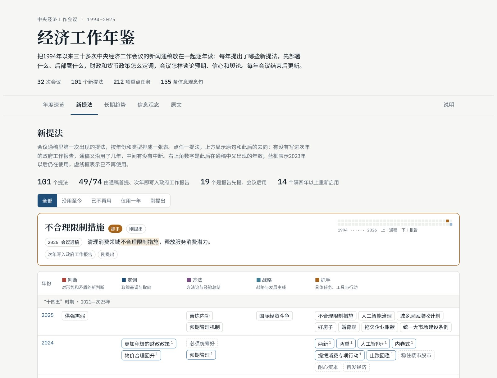

运行中 · v1.0 · 每周一更新
全球涉华经济舆情监测及经济安全化指数
每周自动更新的全球英文涉华经济报道监测：议题、国别、叙事与经济安全化指数。
- 数据：GDELT 英文新闻标题，2019 年第四季度起逐周收录；另有基于网址的长期序列回溯至 2015 年。
- 指数：周度经济安全化指数，附置信区间与稳健性对照。
- 分析：议题榜、国别议程对比与 36 个叙事追踪。
- 每周一自动更新；方法说明公开。
研究产品
基于经济传播与中国国际形象研究开发、持续更新的开放研究工具。
运行中 · v1.0 · 每周一更新
每周自动更新的全球英文涉华经济报道监测：议题、国别、叙事与经济安全化指数。

运行中 · v1.0 · 每年会议后更新
1994年以来中央经济工作会议通稿的逐年解读：每年有哪些新提法，先部署什么，政策怎么定调。